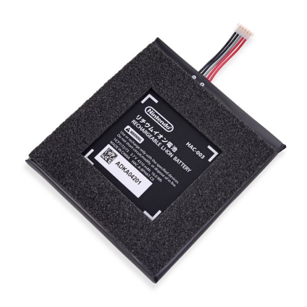
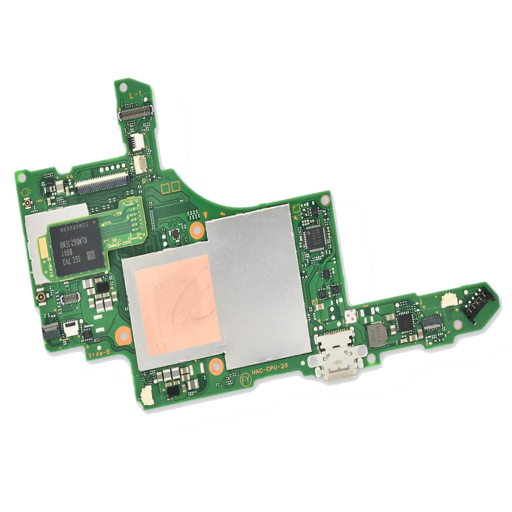
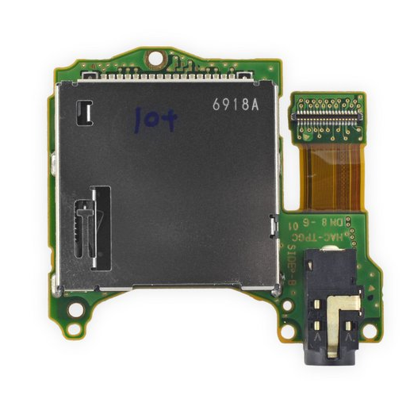
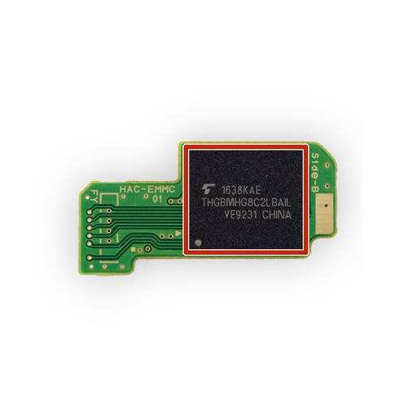
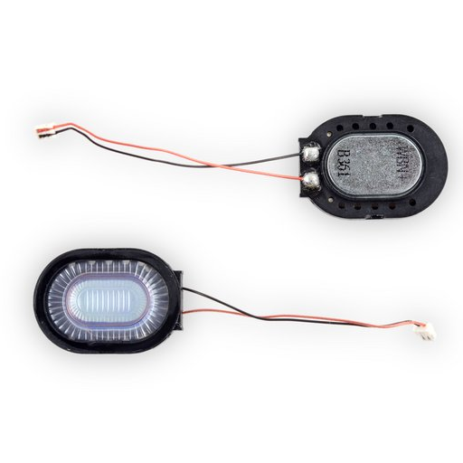
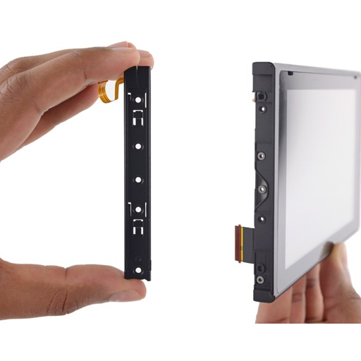
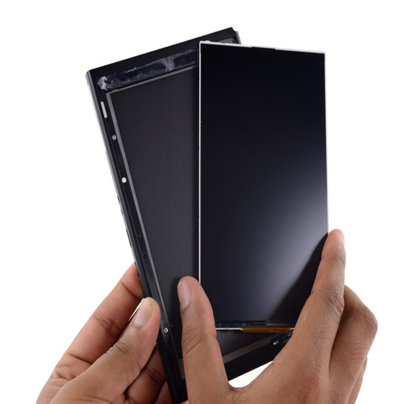
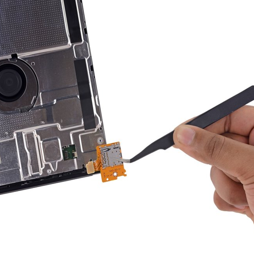

Es handelt sich um einen Lithium-Ionen-Akku mit 16 Wh. Dieser hält je nach Version der Konsole
2,5 bis 6,5 Stunden. Beim Switch Light 3 bis 7 Stunden.

Die Hauptplatine ist das Zentrum der Konsole. Diese Steuert die einzelenen Komponente an und verarbeit die Inforationen die sie zurück bekommt.
Unteranderem beahust sie eine NVEDIA Tegra X1 als Prozessor. Dieser ist vorallem für molibe Geräte geeignet.
Die Hauptplatine ist das Zentrum der Konsole. Diese Steuert die einzelenen Komponente an und verarbeit die Inforationen die sie zurück bekommt.
Unteranderem beahust sie eine NVEDIA Tegra X1 als Prozessor. Dieser ist vorallem für molibe Geräte geeignet.

Kartenleser und Kopfhöreranschluss
Der Kartenleser liest die Daten der Chipkarte der Spiele ein. Er ist mit der 3,5 mm Kopfhörerbuchse verbunden.
Der Kartenleser liest die Daten der Chipkarte der Spiele ein. Er ist mit der 3,5 mm Kopfhörerbuchse verbunden.

Der Lüfter sorgt dafür das das gerät nicht überhitzt. Er braucht 5V bie 0,33A

Bei der Spreicherkarte handelt es sich um einen eMMCNAND Flash-Speicherchip mit 32 GB Speicher. Dieser ermöglicht eine schnelle und dauerhafte Datenspeicherung auch bei keiner Stromversorgung.
Bei der Spreicherkarte handelt es sich um einen eMMCNAND Flash-Speicherchip mit 32 GB Speicher. Dieser ermöglicht eine schnelle und dauerhafte Datenspeicherung auch bei keiner Stromversorgung.

Die Lautsprecher sind einfache Stero Lautsprecher

Die Joy-Con-Schienen
Jede Schiene hat eine Reihe von Stiftkontakten, die zu den entsprechenden Kontakten auf den Joy-Cons passen. Über Flachbandkabel werden so verscheidene Aktionen an die Hauptplatine übertragen.
Jede Schiene hat eine Reihe von Stiftkontakten, die zu den entsprechenden Kontakten auf den Joy-Cons passen. Über Flachbandkabel werden so verscheidene Aktionen an die Hauptplatine übertragen.

Der Touchscreen ist ein 6,2 Zoll großer berührungsempfindlicher Bildschirm mit einer Bildwiederholrate von 60 Hz und einer Auflösung von 1280x720 Pixeln.
60 Hz und einer Auflösung von 1280x720 Bildpunkten.
Im Docking-Betrieb kann die Auflösung erhöht und über den HDMI-Ausgang je nach Anwendung variiert werden.

Der SD-Kartenleser dient dazu, den Speicher der Switches mit einer separaten SD-Karte zu erweitern.